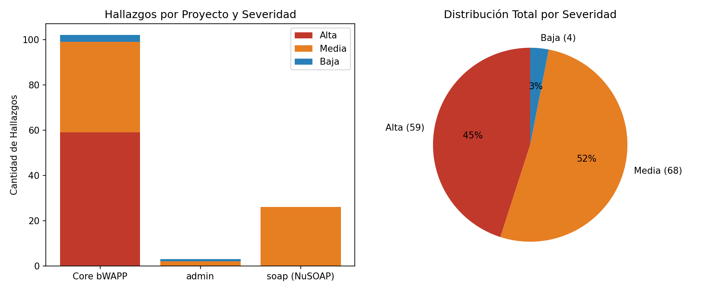
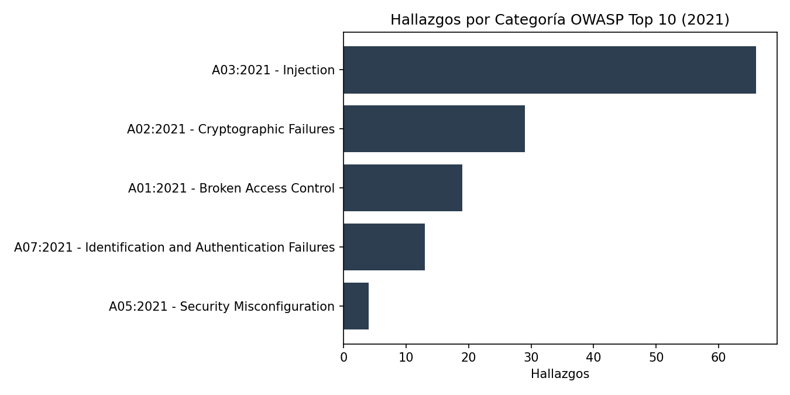
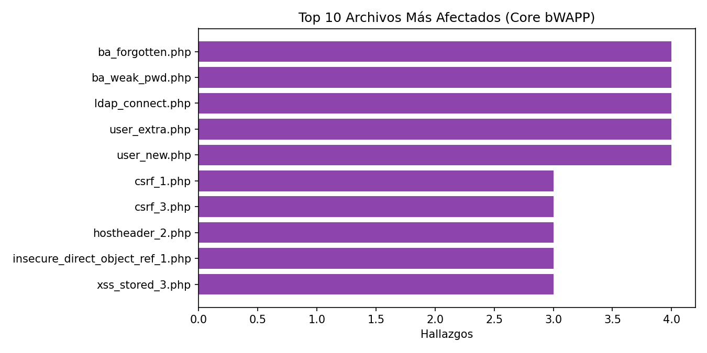

Universidad Mariano Gálvez de Guatemala | Maestría en Seguridad de Aplicaciones | Estudiante: Jose Donaldo Pacay Saenz



| Severidad | Archivo y Línea | OWASP Top 10 | CWE | Descripción |
|---|---|---|---|---|
| Alta | ba_forgotten.php:50 | A03:2021 - Injection | CWE-89 | Posible inyección SQL (CWE-89): entrada del usuario llega a una consulta. |
| Media | ba_forgotten.php:112 | A03:2021 - Injection | CWE-93 | Inyección de cabeceras en función mail() (CWE-93). |
| Media | ba_forgotten.php:167 | A03:2021 - Injection | CWE-93 | Inyección de cabeceras en función mail() (CWE-93). |
| Alta | ba_forgotten.php:188 | A03:2021 - Injection | CWE-89 | Posible inyección SQL (CWE-89): entrada del usuario llega a una consulta. |
| Media | ba_insecure_login_1.php:34 | A01:2021 - Broken Access Control | CWE-601 | Redirección abierta no validada (CWE-601). |
| Media | ba_insecure_login_2.php:34 | A01:2021 - Broken Access Control | CWE-601 | Redirección abierta no validada (CWE-601). |
| Media | ba_insecure_login_3.php:34 | A01:2021 - Broken Access Control | CWE-601 | Redirección abierta no validada (CWE-601). |
| Media | ba_pwd_attacks_1.php:34 | A01:2021 - Broken Access Control | CWE-601 | Redirección abierta no validada (CWE-601). |
| Media | ba_pwd_attacks_2.php:35 | A01:2021 - Broken Access Control | CWE-601 | Redirección abierta no validada (CWE-601). |
| Media | ba_pwd_attacks_3.php:35 | A01:2021 - Broken Access Control | CWE-601 | Redirección abierta no validada (CWE-601). |
| Media | ba_pwd_attacks_4.php:34 | A01:2021 - Broken Access Control | CWE-601 | Redirección abierta no validada (CWE-601). |
| Media | ba_weak_pwd.php:32 | A07:2021 - Identification and Authentication Failures | CWE-798 | Posibles credenciales embebidas en código fuente (CWE-798). |
| Media | ba_weak_pwd.php:37 | A07:2021 - Identification and Authentication Failures | CWE-798 | Posibles credenciales embebidas en código fuente (CWE-798). |
| Media | ba_weak_pwd.php:42 | A07:2021 - Identification and Authentication Failures | CWE-798 | Posibles credenciales embebidas en código fuente (CWE-798). |
| Media | ba_weak_pwd.php:47 | A07:2021 - Identification and Authentication Failures | CWE-798 | Posibles credenciales embebidas en código fuente (CWE-798). |
| Alta | bof_1.php:141 | A03:2021 - Injection | CWE-78 | Inyección de comandos del sistema operativo (CWE-78). |
| Alta | commandi.php:140 | A03:2021 - Injection | CWE-78 | Inyección de comandos del sistema operativo (CWE-78). |
| Alta | commandi_blind.php:149 | A03:2021 - Injection | CWE-78 | Inyección de comandos del sistema operativo (CWE-78). |
| Alta | commandi_blind.php:160 | A03:2021 - Injection | CWE-78 | Inyección de comandos del sistema operativo (CWE-78). |
| Alta | cs_validation.php:107 | A03:2021 - Injection | CWE-89 | Posible inyección SQL (CWE-89): entrada del usuario llega a una consulta. |
| Alta | cs_validation.php:134 | A03:2021 - Injection | CWE-89 | Posible inyección SQL (CWE-89): entrada del usuario llega a una consulta. |
| Alta | csrf_1.php:65 | A03:2021 - Injection | CWE-89 | Posible inyección SQL (CWE-89): entrada del usuario llega a una consulta. |
| Alta | csrf_1.php:93 | A03:2021 - Injection | CWE-89 | Posible inyección SQL (CWE-89): entrada del usuario llega a una consulta. |
| Alta | csrf_1.php:120 | A03:2021 - Injection | CWE-89 | Posible inyección SQL (CWE-89): entrada del usuario llega a una consulta. |
| Media | csrf_2.php:53 | A02:2021 - Cryptographic Failures | CWE-328 | Uso de algoritmo de hash débil MD5/SHA1 (CWE-328). |
| Alta | csrf_3.php:64 | A03:2021 - Injection | CWE-89 | Posible inyección SQL (CWE-89): entrada del usuario llega a una consulta. |
| Alta | csrf_3.php:108 | A03:2021 - Injection | CWE-89 | Posible inyección SQL (CWE-89): entrada del usuario llega a una consulta. |
| Media | csrf_3.php:140 | A02:2021 - Cryptographic Failures | CWE-328 | Uso de algoritmo de hash débil MD5/SHA1 (CWE-328). |
| Media | directory_traversal_1.php:35 | A01:2021 - Broken Access Control | CWE-601 | Redirección abierta no validada (CWE-601). |
| Media | directory_traversal_2.php:35 | A01:2021 - Broken Access Control | CWE-601 | Redirección abierta no validada (CWE-601). |
| Alta | hostheader_2.php:50 | A03:2021 - Injection | CWE-89 | Posible inyección SQL (CWE-89): entrada del usuario llega a una consulta. |
| Media | hostheader_2.php:119 | A03:2021 - Injection | CWE-93 | Inyección de cabeceras en función mail() (CWE-93). |
| Alta | hostheader_2.php:140 | A03:2021 - Injection | CWE-89 | Posible inyección SQL (CWE-89): entrada del usuario llega a una consulta. |
| Alta | hpp-3.php:49 | A03:2021 - Injection | CWE-89 | Posible inyección SQL (CWE-89): entrada del usuario llega a una consulta. |
| Alta | htmli_stored.php:83 | A03:2021 - Injection | CWE-89 | Posible inyección SQL (CWE-89): entrada del usuario llega a una consulta. |
| Media | http_response_splitting.php:31 | A01:2021 - Broken Access Control | CWE-601 | Redirección abierta no validada (CWE-601). |
| Media | http_response_splitting.php:43 | A01:2021 - Broken Access Control | CWE-601 | Redirección abierta no validada (CWE-601). |
| Alta | http_verb_tampering.php:79 | A03:2021 - Injection | CWE-89 | Posible inyección SQL (CWE-89): entrada del usuario llega a una consulta. |
| Alta | http_verb_tampering.php:160 | A03:2021 - Injection | CWE-89 | Posible inyección SQL (CWE-89): entrada del usuario llega a una consulta. |
| Baja | information_disclosure_1.php:30 | A05:2021 - Security Misconfiguration | CWE-200 | Exposición de configuración del servidor mediante phpinfo() (CWE-200). |
| Baja | information_disclosure_1.php:45 | A05:2021 - Security Misconfiguration | CWE-200 | Exposición de configuración del servidor mediante phpinfo() (CWE-200). |
| Media | insecure_crypt_storage_2.php:55 | A02:2021 - Cryptographic Failures | CWE-328 | Uso de algoritmo de hash débil MD5/SHA1 (CWE-328). |
| Media | insecure_crypt_storage_2.php:64 | A02:2021 - Cryptographic Failures | CWE-328 | Uso de algoritmo de hash débil MD5/SHA1 (CWE-328). |
| Media | insecure_crypt_storage_3.php:48 | A02:2021 - Cryptographic Failures | CWE-328 | Uso de algoritmo de hash débil MD5/SHA1 (CWE-328). |
| Media | insecure_crypt_storage_3.php:55 | A02:2021 - Cryptographic Failures | CWE-327 | Uso de cifrado débil o codificación insegura (mcrypt / base64) (CWE-327). |
| Alta | insecure_direct_object_ref_1.php:64 | A03:2021 - Injection | CWE-89 | Posible inyección SQL (CWE-89): entrada del usuario llega a una consulta. |
| Alta | insecure_direct_object_ref_1.php:108 | A03:2021 - Injection | CWE-89 | Posible inyección SQL (CWE-89): entrada del usuario llega a una consulta. |
| Media | insecure_direct_object_ref_1.php:140 | A02:2021 - Cryptographic Failures | CWE-328 | Uso de algoritmo de hash débil MD5/SHA1 (CWE-328). |
| Media | ldap_connect.php:35 | A01:2021 - Broken Access Control | CWE-601 | Redirección abierta no validada (CWE-601). |
| Media | ldap_connect.php:135 | A07:2021 - Identification and Authentication Failures | CWE-798 | Posibles credenciales embebidas en código fuente (CWE-798). |
| Alta | ldap_connect.php:172 | A03:2021 - Injection | CWE-90 | Posible inyección LDAP (CWE-90). |
| Alta | ldap_connect.php:193 | A03:2021 - Injection | CWE-90 | Posible inyección LDAP (CWE-90). |
| Alta | ldapi.php:271 | A03:2021 - Injection | CWE-90 | Posible inyección LDAP (CWE-90). |
| Alta | login.php:44 | A03:2021 - Injection | CWE-89 | Posible inyección SQL (CWE-89): entrada del usuario llega a una consulta. |
| Media | login.php:66 | A02:2021 - Cryptographic Failures | CWE-328 | Uso de algoritmo de hash débil MD5/SHA1 (CWE-328). |
| Media | maili.php:86 | A03:2021 - Injection | CWE-93 | Inyección de cabeceras en función mail() (CWE-93). |
| Alta | password_change.php:66 | A03:2021 - Injection | CWE-89 | Posible inyección SQL (CWE-89): entrada del usuario llega a una consulta. |
| Alta | password_change.php:93 | A03:2021 - Injection | CWE-89 | Posible inyección SQL (CWE-89): entrada del usuario llega a una consulta. |
| Alta | php_eval.php:82 | A03:2021 - Injection | CWE-95 | Ejecución remota de código vía eval() (CWE-95). |
| Alta | phpi.php:90 | A03:2021 - Injection | CWE-95 | Ejecución remota de código vía eval() (CWE-95). |